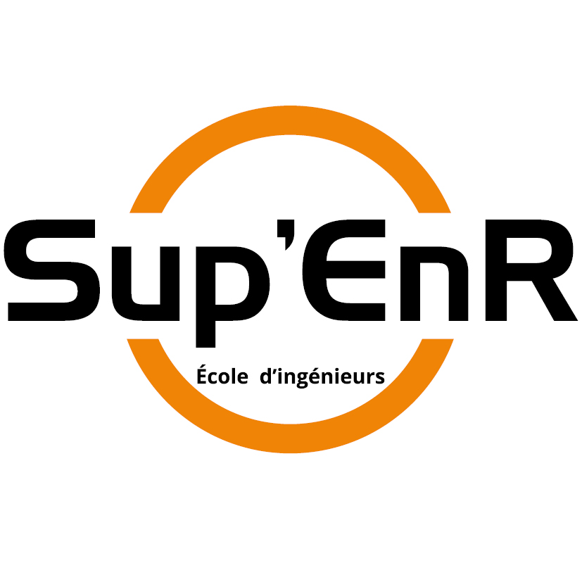
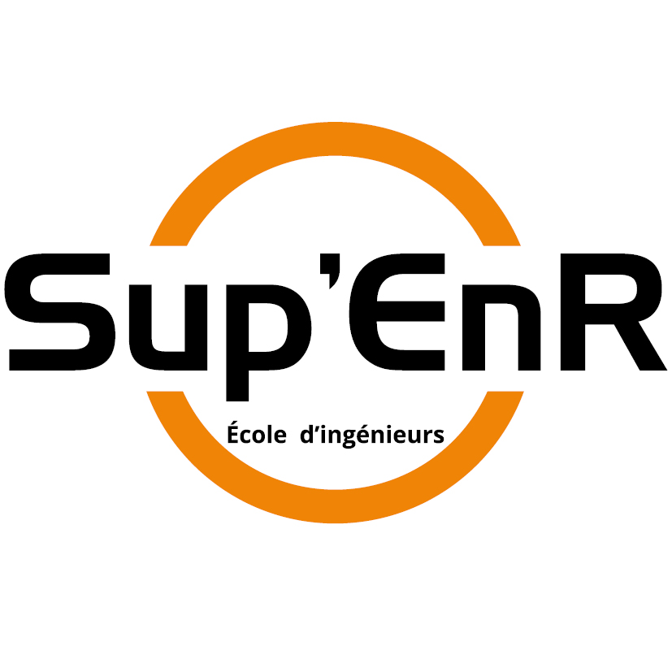

I am a postdoctoral scholar at the Inria center at the University of Bordeaux working in the team CAGIRE (Pau, France), currently working on self-adaptative hybrid RANS/LES methods with Senior CNRS Researcher Rémi Manceau. I am an expert in Computation Fluid Dynamics (CFD) with strong experience in anisothermal flows for low-carbon energy systems. I have been a temporary teaching and research assistant at the PROMES laboratory (University of Perpignan Via Domitia), investigating and developing turbulence models of Large Eddy Simulation (LES) for highly anisothermal flows encountered in solar receivers. My PhD was dedicated to the Simulation and Modeling of flows in gas-pressurized solar receivers with a multi-fidelity approach.
I am eager to dedicate my future work to the challenge of certified CFD. I am particularly interested in deepening the self-adaptive approaches, investigating uncertainty quantification in CFD, and performing multi-fidelity CFD-based optimization. In addition, I am willing to explore the capabilities of machine learning to complement traditional turbulence modeling with physics-informed approaches.
 
